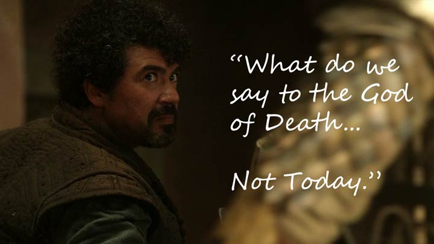
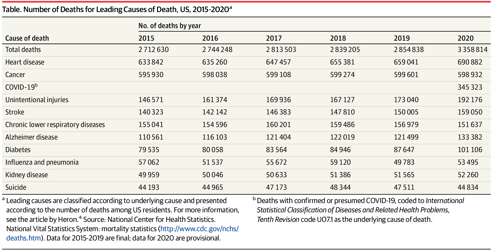

Death
Research to avoid death is amazing. More people should work in it.

As an American in the current decade, heart failure and cancer are about tied to get me eventually. In the USA, war and famine have not been common causes of death, for as long as anyone has been alive. Hope it stays that way. Aside from the work of police, military, and medical staff to keep people safe and healthy, the next tier is obviously research.
Well that and now plague prevention. It is a big deal. There are 50+ years of solving useful problems I would miss out on, if I just up and died. Writing a good piece of work, like a thesis, is a decade long passion project. Many people get to make one of these novel contributions that are not seen anywhere in all 8 billion other people experience. And I could have 70+ years or 100+ of doing stuff like that. In theory we could remove just about everything but death from accidents.
The Covid death numbers seem low, compared to billions of living people, but it was the third most life threatening thing out there to Americans. Yeah, I stayed home and took the MRNA based vaccine. MRNA vaccines are a cool technology. More people should be programming MRNA to fight off these inconvenient little shits. Computers let me do about as much at home as I would in an office. But I imagine Covid will continue to mutate. With a high population and low sanitation standards of some countries, pandemics may become more common.

Cardiovascular problems, on the other hand, are successfully being combatted with medicine. Cardiovascular research is heavily funded. As I get older I will continue to follow medical advice on keeping the pipes working.
Cancer is a bit more tricky, but also leads into a massive wealth of medical science. Fixing the cancer problem requires knowing a lot more about how our cell do things. As seen by the chart above, cardio issues are decreasing over time, up to the point where they match cancer. Cancer has barely moved up or down. That is what is next on the medical scientist's chopping block. Cancer is also never pleasant or quick. Consider these upstart cells to be the next major villains of this century. Be the hero. Learn oncology. If that does not sound fun for you, fund Oncology departments, like the SENS foundation.